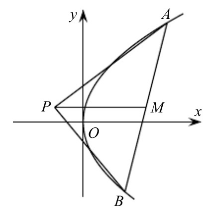
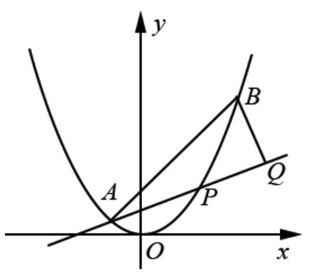
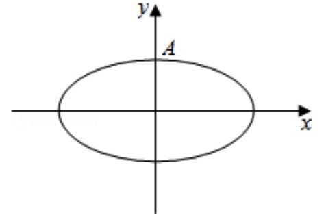
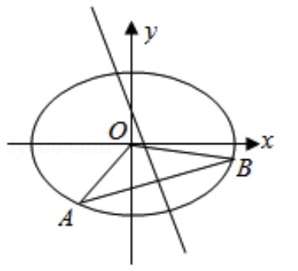
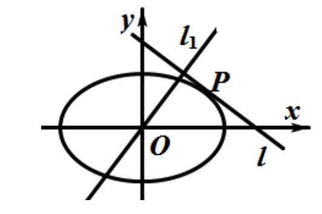
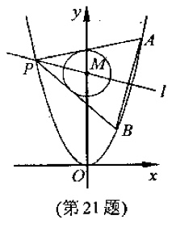
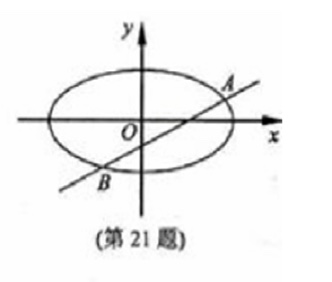

2018-浙江-理-17 【解析大题】
已知点P(0,1),椭圆x24+y2=m(m>1)上两点A,B满足AP−→=2PB−→,则当m=()时,
点B横坐标的绝对值最大
2018-浙江-理-21 【解析大题】
如图,已知点P是y轴左侧(不含y轴)一点,抛物线C:y2=4x上存在不同的两点A,B
满足PA,PB的中点均在C上
(I)设AB的中点为M,证明:PM垂直于y轴
(II)若P是半椭圆x2+y24=1(x<0)上的动点,求ΔPAB面积的取值范围

2017-浙江-理-21 【解析大题】
如图,已知抛物线x2=y,点A(−12,14),B(32,94),抛物线上的点p(x,y)(−12<x<32)
过点B作直线AP的垂线,垂足为Q
(I)求直线AP斜率的取值范围
(II)求|PA|·|PQ|的最大值

2016-浙江-理-19 【解析大题】
如图,设椭圆C:x2a2+y2=1(a>1)
(I)求直线y=kx+1被椭圆截得的弦长(用a,k表示)
(II)若任意以点A(0,1)为圆心的圆与椭圆至多有三个公共点,求离心率的取值范围

2015-浙江-理-19 【解析大题】
如图,已知椭圆C:x22+y2=1上两个不同的点A,B关于直线y=mx+12对称
(I)求实数m的取值范围
(II)求ΔAOB面积的最大值(O为坐标原点)

2014-浙江-理-21 【解析大题】
如图,已知椭圆C:x2a2+y2b2=1,(a>b>0),动直线l与椭圆C只有一个公共点P,
且P在第一象限
(I)已知直线l的斜率为k,用a,b,k表示点P的坐标
(II)若过原点O的直线l1与l垂直,证明:点P到直线l1的距离的最大值为a−b

2012-浙江-理-21【解析大题】
如图,椭圆C:x2a2+y2b2=1(a>b>0)的离心率为12,其左焦点到点P(2,1)的距离为10‾‾‾√.
过原点O的直线l与椭圆相较于A,B两点,且线段AB被直线OP平分
(I)求椭圆C的方程
(II)求ΔABP面积最大时直线l的方程

小蒋的解答(I):
知识点1:椭圆离心率....................
离心率ca=12
得:a=2c
知识点2:两点距离公式....................
左焦点到点P(2,1)的距离为10‾‾‾√
(2+c)2+(1−0)2‾‾‾‾‾‾‾‾‾‾‾‾‾‾‾‾‾‾√=10‾‾‾√
得c=1
知识点3:椭圆abc关系....................
a2=b2+c2
综上得a=2,b=3‾√,c=1
∴椭圆方程为:x24+y23=1
小蒋的解答(II):
步骤1:设点线,明确目标,分析联动关系....................
(★)设点A(x1,y1),B(x2,y2),则AB中点R为(x1+x22,y1+y22)
(★)设直线lAB为:y=kx+m
(★)目标:求直线lAB方程,也就是求k,m
(★)联动关系:
| 几何(思考) |
|
代数(代入化简) |
| 当直线l移动(k,m) |
|
(k,m)满足两个关系式
(也就求得了k,m的范围或值) |
| ⇓ |
|
⇑ 所有的(x1,x2)通过韦达定理换成(k,m) |
| AB两点移动(x1,x2) |
|
⇑ |
| ⇓ |
|
⇑ |
点R移动(x1,x2),
满足:ROP三点共线
ΔPAB面积变化(x1,x2,k,m),
满足:面积最大 |
⇒ |
(x1,x2,k,m)满足两个关系式 |
步骤2:几何转代数....................
步骤3:代入化简....................
步骤4:结论....................
2011-浙江-理-21【解析大题】
如图,已知抛物线C1:x2=y,圆C2:x2+(y−4)2=1的圆心为点M
(I)求M到抛物线C1准线的距离
(II)一直点P是抛物线C1上一点(异于原点),过点P作圆C2的两条切线
交抛物线C1与A,B两点,若过M,P两点的直线l垂直于AB,求直线l的方程

小蒋的解答(I):
知识点1:圆心坐标....................
∵圆C2:x2+(y−4)2=1
∴圆心M坐标:(0,4)
知识点2:抛物线准线方程....................
抛物线C1:x2=y中p=12
∴准线方程为y=−p2=−14
∴M到抛物线C的距离为4−(−14)=174
小蒋的解答(II):
步骤1:设点线,明确目标,分析联动关系....................
(★)设点P(t,t2),A(x1,x21),B(x2,x22)
有题意得:t≠±1,x1≠x2
(★)设过点P的圆的切线方程为:y−t2=k(x−t)
即:kx−y−kt+t2=0
(★)设直线PA,PB的斜率分别为k1,k2(k1≠k2)
(★)目标:求垂直时的直线l方程,也就是求t
(★)(★)(★)联动关系:
| 几何(思考) |
|
代数(代入化简) |
| 当P点移动(t) |
|
(t)满足一个关系式
(也就求得了t的范围或值) |
| ⇓ |
|
⇑ 把所有的k1,k2替换成t |
变化1:lPA,lPB移动(k1,k2)
变化2:直线l移动(kPM很容易用t表示) |
|
(k1,k2,t)满足一个关系式 |
| ⇓ |
|
⇑ 把所有的x1,x2替换成k1,k2,t |
变化1:直线lAB移动(x1,x2),
满足:"垂直于直线l" |
⇒ |
(x1,x2,t)满足一个关系式 |
步骤2:几何转代数....................
(★)几何:点A在切线PA上,点B在切线PB上→代数:点代入直线方程
把A点代入斜率为k1切线方程k1x−y−k1x0+t2=0
得:k1x1−x21−k1x0+t2=0
即:x21−k1x1+(k1−t)t=0
整理得:(x1−t)(x1−(k1−t))=0
得:x1=k1−t
同理把B点代入斜率为k2切线方程k2x−y−k2t+t2=0
得:x2=k2−t
(★)几何:过点与圆相切的直线→代数:点线距离公式
圆心(0,4)到切线kx−y−kt+t2=0的距离刚好等于半径1
k×0−4−kt+t2k2+1√=1
整理得:(t2−1)k2+2t(4−t2)k+(t2−4)2−1=0
k1,k2正好是上述方程的两个解
k1+k2=2t(t2−4)t2−1
k1⋅k2=(t2−4)2−1t2−1
(★)几何:两直线垂直→代数:kPMkAB=−1
(★)几何:两点斜率→代数:kAB=x21−x22x1−x2,kPM=x21−4x1−0
得:kAB=x1+x2,kPM=t2−4t
步骤3:代入化简....................
kPMkAB=−1
(x1+x2)(t2−4t)=−1
(★)AB两点由斜率决定,把x1,x2换成k1,k2
(k1−t+k2−t)(t2−4t)=−1
(★)斜率由P点决定,把k1,k2通过韦达定理换成t
(2t(t2−4)t2−1−2t)(t2−4t)=−1
算得t=±115√5
步骤4:结论....................
∴P(±115√5,235),结合点M(0,4)
得直线l的方程为:y=±3115√115x+4
2010-浙江-理-21【解析大题】
已知m>1,直线l:x−my−m22=0,椭圆C:x2m2+y2=1,
F1,F2分别是椭圆C的左,右两个焦点
(I)当直线l过右焦点F2时,求直线l的方程
(II)设直线l与椭圆C交于A,B两点,ΔAF1F2,ΔBF1F2的重心分别为G,H
若原点O在以线段GH为直径的圆内,求实数m的取值范围

小蒋的解答(I):
知识点1:椭圆abc关系....................
c=a2−b2‾‾‾‾‾‾‾‾√=m2−1‾‾‾‾‾‾‾√
∴F2的坐标为(m2−1‾‾‾‾‾‾‾√,0)
知识点2:直线过点....................
将点F2(m2−1‾‾‾‾‾‾‾√,0)代入直线x−my−m22=0
m2−1‾‾‾‾‾‾‾√−m×0−m22
得:m=2‾√
小蒋的解答(II):
步骤1:设点线,明确目标,分析联动关系....................
(★)设A(x1,y1),B(x2,y2)
(★)直线l为x−my−m22=0
(★)题目是求m
(★)联动关系:
| 几何(思考) |
|
代数(代入化简) |
| m变化 |
|
m满足一个关系式
(也就是求得了m的范围或值) |
| ⇓ |
|
⇑ 把所有的x1,x2替换成m |
| AB两点移动(x1,x2) |
|
(x1,x2)满足一个关系式 |
| ⇓ |
|
⇑ 把所有的xG,xH替换成x1,x2 |
重心GH移动(xG,xH)
满足:"原点O在以线段GH为直径的圆" |
⇒ |
(xG,xH)满足一个关系式 |
步骤2:几何转代数....................
(★)几何:A,B两点→代数:需要联立方程,消元,韦达,Δ
联立:⎧⎩⎨⎪⎪x−my−m22=0x2m2+y2=1
消元:x2+(x−m22)2−m2=0
化简:2x2−m2x+m44−m2=0
x1+x2=m22
x1⋅x2=(m44−m2)/2
令Δ=(m2)2−4×2(m44−m2)=−m4+8m2>0
得:m2<8
(★)几何:重心→代数:三角形重心公式
重心G的坐标为(x1+xF1+xF23,y1+yF1+yF23)=(x13,y13)
重心H的坐标为(x2+xF1+xF23,y2+yF1+yF23)=(x23,y23)
(★)几何:原点O在以线段GH为直径的圆内⇔∠GOH为钝角→代数:OG−→−⋅OH−→−<0
OG−→−=(x13,y13),OH−→−=(x23,y23)
OG−→−⋅OH−→−<0,即x13⋅x23+y13⋅y23<0
得:x1x2+y1y2<0
步骤3:代入化简....................
x1x2+y1y2
(★)利用直线y=xm−m2代入
=x1x2+(x1m−m2)(x2m−m2)
=(1+1m2)x1x2+x1+x22+m24
(★)利用韦达定理代入
=(1+1m2)((m44−m2)/2)+m222+m24
=18(m2+1)(m2−4)<0
得:m2<4
步骤4:结论....................
由m2<8,m2<4,以及题意m>1
最终得1<m<2